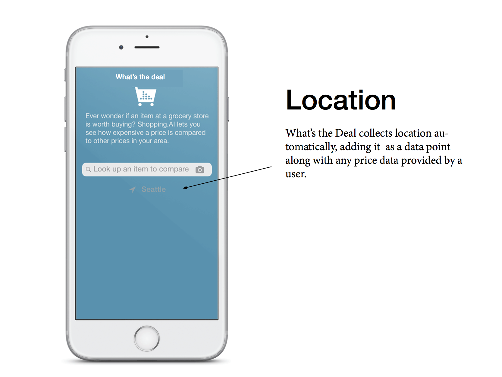
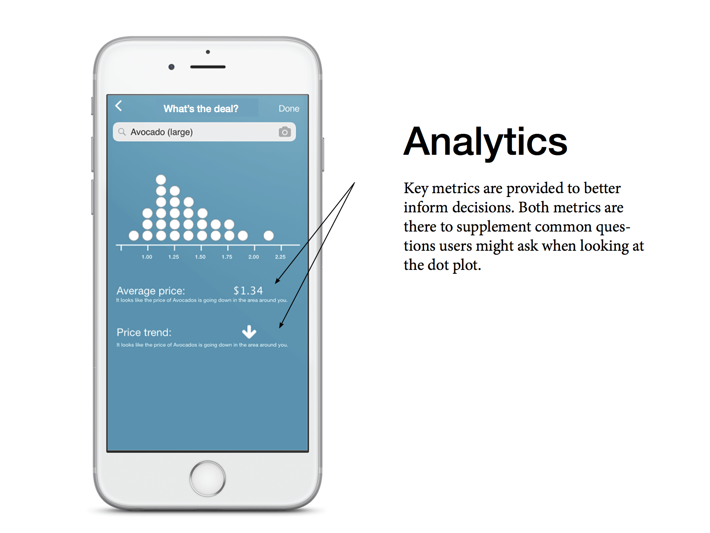

Dotplots for Decision Making
Making decisions is hard... dot plots can help! Dot plots allow people to make quick decisions based off a data visualization this is easy to understand, quick to preceptually process(dots can be grouped together to be counted) and flexible to display. I made the first(that I am aware of) D3js package that allows data sets to be dynamically visualizaed with a dot plots. See the three example datasets below.
App Prototype: Whats the Deal?
To illustrate a use case of a dotplot, I did a quick prototype of an app that helps shoppers make decisions about the deals they find in grocery stores. I designed an interface that allows users to look up grocery items and compare the prices for a particular item in their local area. This app gives value to it's users by helping shoppers make their shopping deicisions.
Key Path

Design Features


